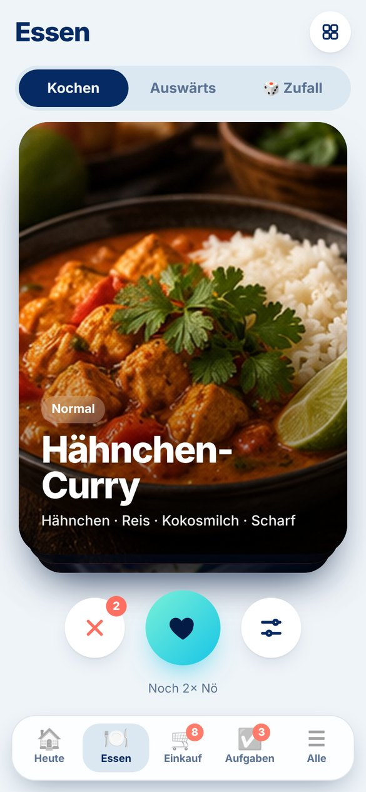
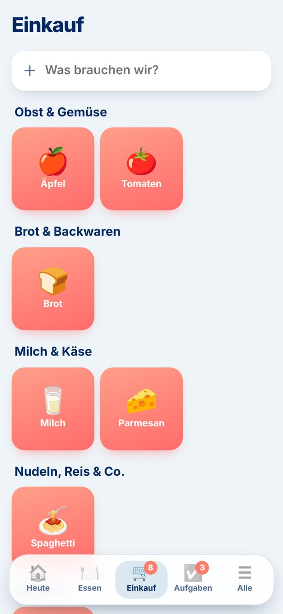
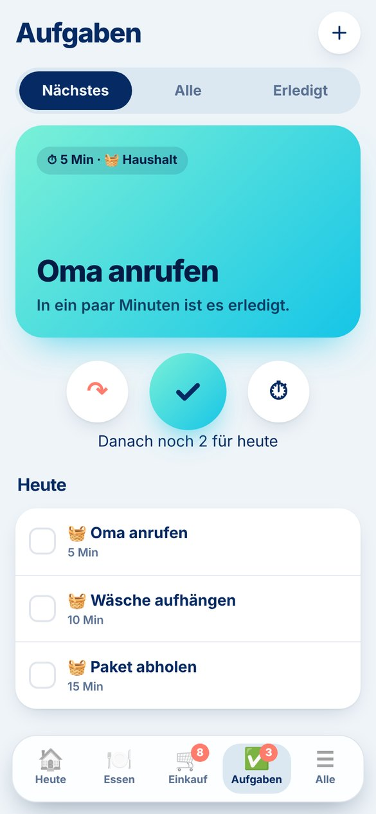

Heute
Eine Startseite, die weiß, was gerade dran ist: abends das Essen, tagsüber die nächste Aufgabe, zwischendurch der Einkauf.
Unser ADHS-Helfer
Pick nimmt euch die kleinen Entscheidungen ab, die den Kopf voll machen – was es zu essen gibt, was eingekauft werden muss und was als Nächstes dran ist.
„Was essen wir heute?“ „Wer bringt den Müll raus?“ „Haben wir noch Milch?“ Jeden Tag hundert kleine Fragen – und jede kostet Kraft. Pick beantwortet sie für euch, damit im Kopf wieder Platz ist.
Eure Helfer
Eine Startseite, die weiß, was gerade dran ist: abends das Essen, tagsüber die nächste Aufgabe, zwischendurch der Einkauf.
Eure Lieblingsgerichte und Restaurants als Kartenstapel. Wischen statt diskutieren – mit Rezept, Zutaten und Karte zum Restaurant.

Eine gemeinsame Liste, die sich sofort auf beiden Handys aktualisiert. Zutaten kommen mit einem Tipp direkt aus dem Rezept.

Keine endlose To-do-Liste, sondern immer nur eine Karte: das Nächste. Mit Timer, „später“ und dem guten Gefühl beim Abhaken.

So geht’s
Und weil endloses Weiterwischen auch keine Entscheidung ist: Höchstens zweimal Nö pro Tag. Danach gilt die Karte.
Was noch kommt
Ein gemeinsamer Kalender, der rechtzeitig Bescheid gibt.
baldMorgens und abends Schritt für Schritt – ohne nachzudenken.
bald„Was machen wir am Wochenende?“ – einmal wischen, fertig.
baldPrivate App – Zugang nur für uns zwei.